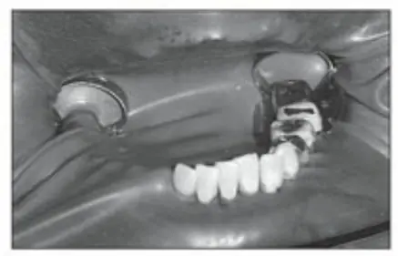
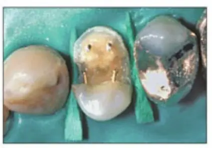

نسخه استخراجشده؛ ترجمه یا تأیید علمی انجام نشده است. وضعیت: captured
قدم 1 · theory
چرا ورق پاره میشود
در تراش باکس مزیال پرمولر دوم پایین، فرز به سپتوم ورق میخورد و ورق میان دو دندان جر میخورد. حالا بزاق از همانجا به باکس میآید و ترمیم هنوز نیمهکاره است. این پارگی را چطور میشد پیشگیری کرد و حالا چه میکنی؟

کلمپی که روی ورق بیسوراخ گذاشته شده؛ ورق باید شل کشیده شود و فکها کُند باشند تا ورق سوراخ نشود. (Summitt's Fundamentals of Operative Dentistry — Fig. 8-15)
ورق پاره یعنی ایزولاسیون ضعیف: بزاق به میدان میرسد و ورق دیگر از بیمار محافظت نمیکند. پس کمی دقت برای پیشگیری میارزد. پارگی معمولاً از یکی از اینها میآید:
ورق کهنه: هر ورقی، لاتکس یا بدون لاتکس، با گذشت زمان مقاومتش در برابر پارگی را از دست میدهد. معمولاً وقتی میفهمی که ورق هنگام گذاشتن پاره شده است.
ورق نازک: ورق ضخیمتر کمتر پاره میشود؛ در درمان ریشه ورق نازک هنگام گذاشتن زود پاره میشود.
سوراخ: سوراخ خیلی کوچک زیر کشش زیاد پاره میشود، و پارگی سوراخ نامنظم از همان ناهمواری لبه شروع میشود.
کشش زیاد هنگام گذاشتن: کلمپ بالدار بزرگتر است و سوراخ را بیشتر کش میدهد؛ در روش کلمپ اول، ورق بدون لاتکس زیر این کشش از هم میپاشد.
تماس زبر یا سپتوم تاخورده که بهزور از تماس رد شود.
فرز در کار پروگزیمال، نزدیک سپتوم.
کلمپ روی ورق: وقتی کلمپ را روی ورق بر دندانی میگذاری که برایش سوراخ نزدهای، ورق سفتکشیده یا فک تیز ورق را سوراخ میکند و پارگی از همانجا راه میافتد.
قدم 2 · theory
پیشگیری و ترمیم پارگی
پیشگیری
جعبههای ورق را دور از گرما نگه دار؛ جعبههای اضافه را میشود در یخچال گذاشت. ورق شکننده را دور بینداز و اگر تازه خریدهای، به فروشنده برگردان.
هنگام تراش پروگزیمال، وج چوبی بیندندانی سپتوم را از فرز محافظت میکند.
در درمان ریشهی دندانی با پوسیدگی عمیق پروگزیمال، پوسیدگی سرویکال را پیش از رابردم بردار، بیآنکه وارد فضای پالپ شوی. فرز دیگر بعداً ورق را نمیبُرد و مرز سرویکال تمیز را هم میبینی.
کلمپ روی ورق: فکها کُند باشند و ورق شل روی دندان بیفتد.
اگر ورق پاره شد
پارگی کوچک: تکهای ورق ببُر که از هر طرف حدود ۱ سانتیمتر از پارگی بزرگتر باشد و آن را با چسب سیانوآکریلات روی پارگی بچسبان.
پارگی بزرگ: پارگیای که بزرگ است، یا از لبهی سوراخ شروع شده و سیل دور گردن دندان را از بین برده، با وصله درست نمیشود. ورق را عوض کن، یا ورق دومی روی ورق اول بگذار.
نکتهی طلایی: ورق دوم روی ورق اول دو کاربرد دیگر هم دارد: نشت از سوراخهایی که اندازهشان درست نبوده، و کار با مواد شیمیایی قوی.

گوه چوبی بیندندانی ورق را از برش فرز محافظت میکند. (Summitt's Fundamentals of Operative Dentistry — Fig. 8-26)
قدم 3 · question
جعبهای ورق که هفتهی پیش خریدهای، در آزمون کشیدن میان شست و انگشت اشاره بهراحتی جر میخورد. کدام کار درست است؟
۰۱
ورقها را یک شب در یخچال بگذاری تا کشسانی از دسترفتهشان برگردد
۰۲
ورقهای شکننده را کنار بگذاری و جعبه را به فروشنده برگردانی
۰۳
ورقها را فقط برای درمان ریشهی تکدندان به کار ببری
۰۴
پیش از گذاشتن، ورقها را با لوبریکانت بیشتری چرب کنی
قدم 4 · question
دانشجو برای درمان ریشهی مولر اول پایینی که پوسیدگی عمیق دیستال تا نزدیک لثه دارد، اول رابردم میگذارد و بعد پوسیدگی دیستال را با فرز برمیدارد. فرز سپتوم دیستال را میبُرد. کجای کار اشتباه بود؟
۰۱
برای درمان ریشه باید ورق نازکتری برمیداشت که زیر فرز کش بیاید
۰۲
رابردم باید پس از باز کردن سقف پالپ و خارج کردن بافت پالپ تاجی گذاشته میشد
۰۳
پوسیدگی سرویکال باید پیش از رابردم، بیورود به فضای پالپ، برداشته میشد
۰۴
کل پوسیدگی باید پیش از رابردم برداشته میشد، حتی اگر پالپ باز شود
قدم 5 · question
در ترمیم قدامی، میخواهی روی ورق، کلمپی بر کانینی بگذاری که برایش سوراخ نزدهای. کدام دو شرط جلوی پارگی ورق را میگیرد؟
۰۱
کلمپ بالدار باشد و ورق پیش از کلمپ با وازلین چرب شود
۰۲
فکهای کلمپ تیز باشند و ورق سفت روی دندان کشیده شود
۰۳
فکهای کلمپ دندانهدار باشند و ورق دولایه روی دندان تا شود
۰۴
فکهای کلمپ کُند باشند و ورق شل روی دندان بیفتد
قدم 6 · question
وسط یک ترمیم طولانی کلاس II، پارگی کوچکی در ورق نزدیک گوشهی دهان، دور از دندانها، پیدا میشود. آن را چطور وصله میکنی؟
۰۱
تکهای ورق که فقط حدود ۱ میلیمتر از لبهی پارگی بیرون میزند، با چسب سیانوآکریلات
۰۲
تکهای ورق که از هر طرف حدود ۱ سانتیمتر بزرگتر است، با چسب سیانوآکریلات
۰۳
تکهای ورق به اندازهی خود پارگی، که با لوبریکانت محلول در آب روی ورق میماند
۰۴
نوار چسب پزشکی از هر دو طرف ورق، بی هیچ تکهی ورق اضافه
قدم 7 · question
در درمان ریشهی پرمولر اول بالا، ورق از لبهی سوراخ همان دندان جر میخورد و بزاق به حفرهی دسترسی میآید. کدام کار درست است؟
۰۱
تکهای ورق با حاشیهی ۱ سانتیمتر روی پارگی بچسبانی و درمان ریشه را ادامه دهی
۰۲
ورق را عوض کنی یا ورق دومی روی ورق اول بگذاری؛ وصله سیل را برنمیگرداند
۰۳
کار را با رول پنبه، ساکشن بزاق و HVE تا پایان همین جلسه، بیرابردم، ادامه دهی
۰۴
کلمپ را با کلمپ بزرگتری عوض کنی تا ورق پاره را دور گردن دندان محکمتر نگه دارد